|
Click here to email me if you have any questions
MS2 Settings Manual
|
Images shown are from Tuner Studio and MegaTune, users will find they are very similar and have the same functions, but Tuner Studio has more features for helping you tune.
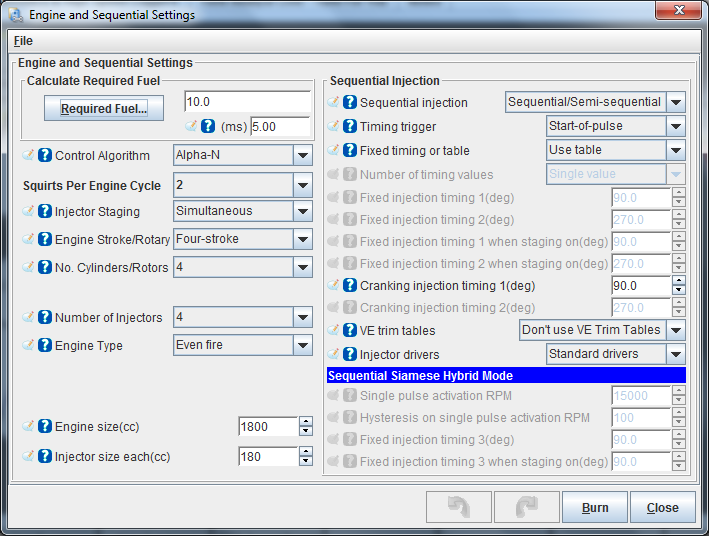 Required Fuel: In order to come up with this value, Tuner Studio provides a calculator that will suffice for 99% of applications (those for which it will not work generally require changes to the MegaSquirt controller code itself, and that is beyond the scope of this manual). To use the wizard, click on the Required Fuel button, and fill in the fields (Engine Displacement, Number of Cylinders, Injector Flow, and Air:Fuel ratio(14.7), then click "Okay"). Control Algorithm Note: if you choose alternating for port injection, make sure your number of squirts is an even number (2,4,...) and evenly divisible into the number of cylinders. For example, with an eight cylinder engine, you could use alternating and 2, 4, or 8 squirts/cycle. With a six cylinder, if you choose alternating, you MUST use 2 or 6 squirts/cycle. Also, the only possible combinations for an odd-cylinder count engine are either 1 squirt/simultaneous or N squirt/simultaneous combination, where N is the number of cylinders.
"OK" means the combination will work with either simultaneous or alternating. "no" means it will not work with either, i.e., not at all. Virtually all installs will use 2 (4 is OK for lower RPM engines like V8's). Values of 7 and above would most certainly not be used. Squirts per Engine Cycle is set the number of squirts you want per engine cycle. You want this to be set so that your idle pulse width is no less than 2.0 ms, if possible, and your Req_Fuel is less than 12-15 milliseconds, but more than 8 milliseconds. These values allow proper tuning of the idle mixture while maintaining the ability to apply enrichments (acceleration, warm-up, etc.) under full throttle. This is the total injector events that you wish to occur for every engine cycle (360 degrees for two stroke engines and 720° for four strokes). Injector Staging values for injector staging are simultaneous or alternating. If you want all your injectors to fire at once, select simultaneous. If you want half your injectors to fire at each injection event, and the other half on the next event, select alternating. There is some benefit to choosing 2 squirts/alternating for port injection, since only half of the injectors fire at once, the pressure drop in the fuel rails is reduced and the fuelling is more consistent. With throttle body injection, the number of injection/cycle you can will depend on your number of cylinders, plenum size, Req_Fuel, etc. You have to experiment to see what works best for your combination. Engine Stroke values for engine stroke type are two-stroke or four-stroke. MegaSquirt uses engine stroke to determine how many degrees are in an engine cycle. Number of Cylinders is the count of the cylinders on your engine. If you are unsure how many cylinders your engine has, you should not be installing MegaSquirt on it. Injector Port Type This is not used in MS-Extra, so no settings needed for this, it should be greyed out. Number of Injectors is the total number of injectors MegaSquirt is controlling, whether port or throttle body injection. (this is used in the Required Fuel calculation) Engine Type: This has the options of Odd fire or even fire. Odd-fire or even fire does not refer to the firing order, but rather the interval between successive firings. So if you have a 4 cylinder, and a spark every 180 degrees, you have an even fire. Almost all 4 cylinder engines are even fire. However some 90 degree V6s, some V4s, and most V-Twins (usually motorcycle engines), as well as a few others, have 'odd-fire' arrangements. Engine Size and Injector Size: This is for working out the Req_fuel as above and for calculating Fuel Flow, MPG, etc, within the tuning software. Sequential Injection: Here you can turn on the sequential function. UnTimed is OFF (normal function). It should be noted that Siamese mode, for Siamese ported engine like the British Leyland B series, and Staged Mode won't be discussed here as it is rather complex and a specialist subject Timing Trigger: This is when you want the fuel to be added in relationship to the angle you have set. Usually this is set to End-of-Pulse as that's easiest to work out with varying PW's, but you can have it so the fuel starts at a certain angle or that the fueling PW ends at the set angle (Start-of-pulse), or even so the PW is timed for being in the middle of the angle (Mid-Pulse). Fixed timing or Table: The fixed timing has no trim for engine speed or load, it simply uses the Fixed Injection Timing Angle for all conditions. If you select the table you can then adjust the angle with load and engine speed, much like the spark map, this is a 6x6 map. See below for the table. Fixed Injection Timing: This is the angle for fueling when not using the table. (Most applications will gain from using the table). Cranking Injection Timing: The angle that is used for crank fueling as some engines may benefit from firing fuel when the inlet valve is open during cranking. VE Trim Tables: This should be the final tuning stage if you have EGT and really know what your doing. It allows you to tune the fueling for each injector with it's own 16x16 trim table. The tables allow a +-12.4% adjustment from the main VE table. See the EGT Tuning Page for more on this. Injector Drivers: Standard Drivers means the 2 on board outputs, which are for Semi-Seq on a 4cy . (Use this setting unless you have an MS2X card fitted!!) 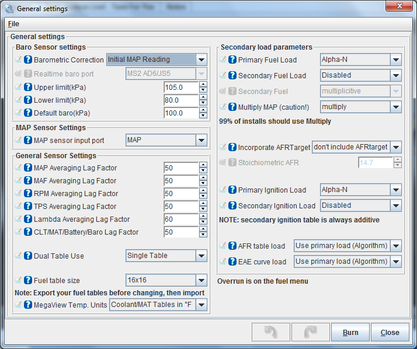 Barometric Correction: Upper /Lower Limit: Default Baro: Input Smoothing Lag Factors: New Variable Value = Previous Value + (New Value - Previous Value) * ( LagFactor/100*) Dual Table Use: Fuel Table Size: Secondary Fuel Load: Secondary fuel load allows a second fuel table to be used for those who feel the need for 31x16 or 16x31 tables for example or blended alpha-n and speed-density. So if you decided to use the second fuel map you could do 20KPa to 100KPa (this would be out of boost) then on the second VE table have 100KPa to your boost limit (e.g. 200KPa). Secondary Fuel: The secondary map values can either be multiplied as percentages to the main map or added to the main map where they cross over. (Multiply is the normal route here). Multiply MAP: This changes the way the VE table values function. The usual equation is to multiply the MAP value (along with other corrections, req_fuel, etc) to find the final Pulse Width. For some engines with very jumpy MAP signals it may be necassery to turn this off to get a smoother tune. Incorporate AFR Targets: This includes the AFR table in the fueling equation. So once the VE has be dialled in to match the AFR table, future changes can be made using the AFR table alone. I'd advise to leave it off. Primary Ignition Load: This allows the ignition map to follow either Speed Density or Alph_N. See the MAP or TPS page HERE or the PDF file. Secondary Ignition Load: This enables a second spark table that allows blending between Speed Density and Alpha_N.
Injector Dead Time (ms) is the amount of time required for the injector to go from a fully closed state to a fully opened state when a 13.2 volt signal is applied. Since fuel injectors are electro-mechanical devices with mass, they have latency between the time a signal is applied and the time they are in steady-state spraying mode. Typically, this value is very close to 1.0 milliseconds. The MegaSquirt code assumes that NO fuel is injected during the opening (and closing) phases. However, it is very likely that a small amount actually is injected. Thus making this value larger will enrich the mix and will have a much greater effect at low pulse widths. MegaSquirt also uses this value as an additive constant in pulse width calculation, thus making this the lower limit for pulse width. If you are running high-impedance injectors (greater than 10 Ohms), then set the:
If you have low impedance injectors (less than 4 Ohms), set the:
For more information on these settings please see click here. Specific Bank 2 Setting: Injector PWM Period: 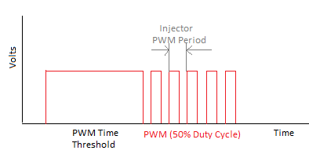
Ignition Options / Wheel Settings 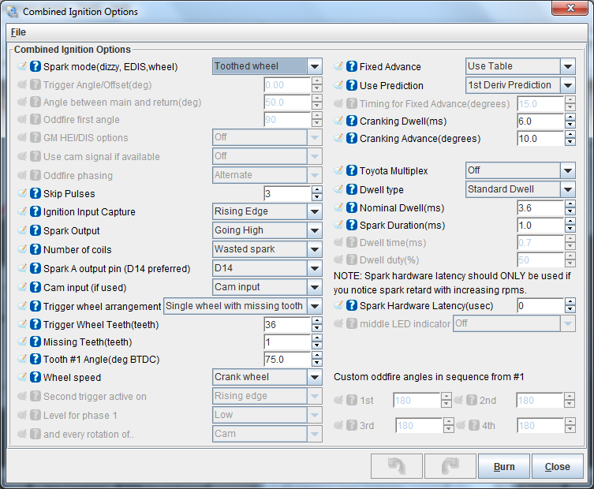 Spark Mode: Trigger Angle Offset: Skip Pulses: Ignition Capture: Spark Output: Number of Coils: Single Coil Spark A Output Pin: Trigger Wheel Arangement - See the Wheel Fitting Page or PDF Fixed Advance: Use Prediction: Cranking Dwell: 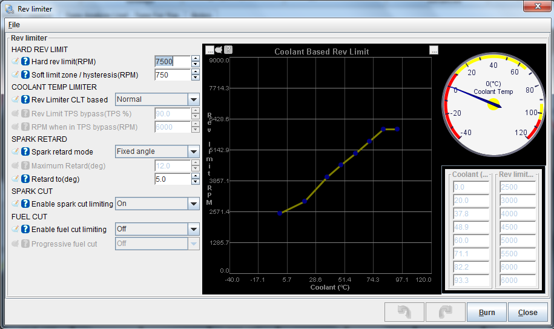 This system can cut fuel, and or cut sparks in a round robin fashion and or retard the ignition. Hard Limit is the RPM that we either cut fuel or Sarks, or both (Note an EDIS based setup will not cut sparks as it has a limp home feature that will cut in) If you have Spark Cut set in the Algorithm then you can cut every X from Y spark events: e.g. Cut 4 out of 5 = - - - -* , - - - -* , - - - -* Soft Limit Zone: Is the rpm below the Hard Limit where the ignition advance is limited Rev Limiter CLT based: The limit can be altered with coolant temperature, as a cold engine will need a lower limit than a hot engine. Usually the driver would know not to push the car untill it's up to temperature, etc, but you can adjust the rev limit depending on the coolant value. This has to be set carefully as if you select IAC1 or IAC2, for example, as outputs (Enable them) and you have the IAC stepper motor function enabled (these are the same pin on the processor) the code will find a Config Error and stop working until the selection is fixed. Items like PM3 (LH LED), PM4 (RH LED) and PM5 (Middle LED) (LED 14, 16 and 15 respectively) are likely to be used as spark outputs. See the bottom of your ECU to find out what pins outputs are setup for. 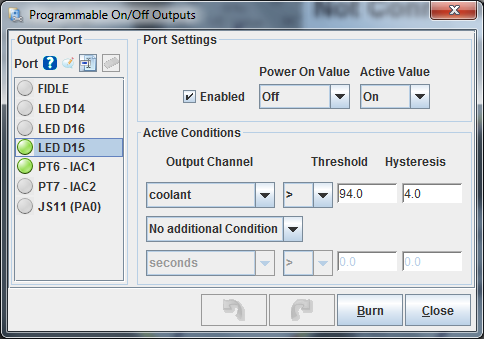 You can soon tell which outputs are enabled by the green highlight beside the output pins name. Set the Power on value and Trigger Value as above for normal use. Once the threshold is made the output will come on. It will stay on untill the condition drops below the threshold by the hysterisis value, so above the output will come on (The output is ground switching) at 94C and off at 90C. You can also select a second condition, for example, TPS above 80% and coolant above 70C for a valve in the intake to change over, etc. 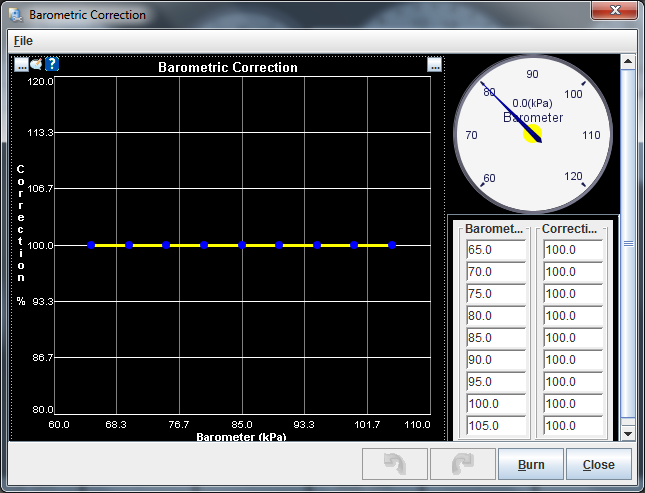 The MS ECU's have a table within the fueling calculation algorithm that changes the fueling depending on the barometric correction. To use this table, 99% of users, keep this graph at 100%. If you feel your fueling has altered during the climb up a mountain then this may be an area to look at, but it really should be the last resort.
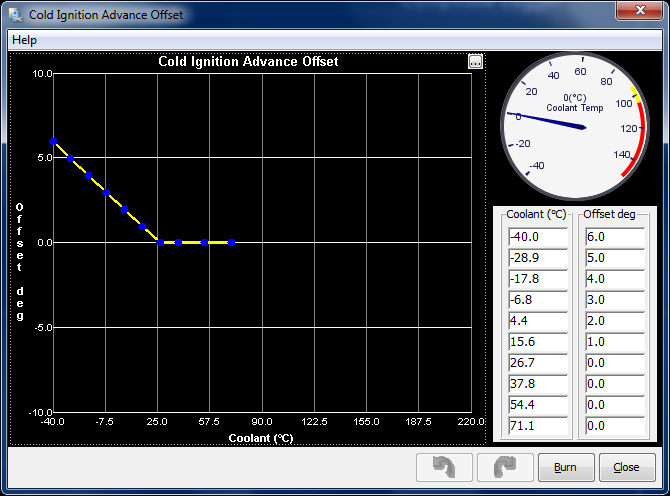
This allows for some advance to be added to the base ignition map when the engine is cold, this aids warmup time and helps to increase the idle speed during the cold period of warmup. Ensure the last bin is just below the operating temp (71C) and is set to ZERO so it follows the ignition map above that temperature.
MAT (Manifold Air Temp) Based Ignition Retard 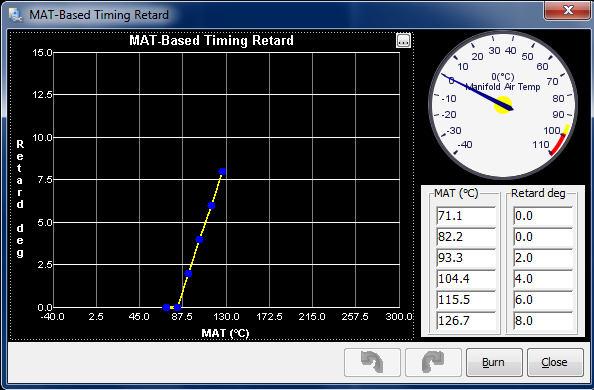 As air warms up it looses density, this increases the likely hood of detonation, especially in boosted engines. This function can remove advance from the base map when air temps reach the limit to help reduce the likely hood of knock. Ensure the first bin is the usual air temperature you experience, 60-90C and is set to ZERO like the above.
Manifold Air Density Correction 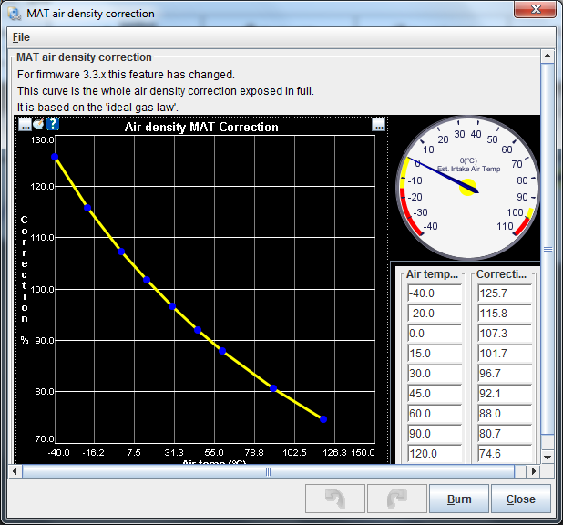 The MS ECU calculates air density using the air temp sensor. This is the correction curve (Boils Law) that the ECU uses to adjust the fueling. This table can be used to correct for heat soak on the temperature sensor, in some cases the sensor can become heated by external influences, e.g. the manifold if it's bolted to it. This tends to happen if its sat in traffic for a while, etc. If this happens then you can trim the correction down, so the engine doesn't go lean due to heat sink. I have found that in most cases this needs altering around 35-45C so that the fuel doesn't get reduced. Mainly because the air isn't actually as hot as the sensor is, due to heat soak of the sensor. So below are the sort of settings I tend to end up with: (Note that it will run richer than normal with these settings if the air does indeed get into 40C and above with these settings, you will need to test different values if your air does get hot due to a super charger or turbo, etc)
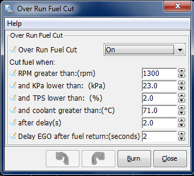 This is to help cut fuel bills. Basically when your in gear and the engine is on overrun (no throttle, slowing down with the engine) there is no point in fueling it. So we can cut fuel during that period, to do this look through datalogs and see where your MAP drops to during over run, ensure that the MAP doesn't wander that low when your cruising or driving normally! Set the KPA Lower value to just above the minimum it goes on overrun, this is best to ensure it is at least 10KPa lower than your crusing KPa. Delay is usually fine at 2S. Ensure the RPM is greater than 1200ish to allow the fuel to cut back in as the engine slows.
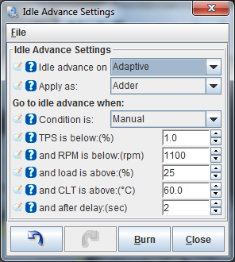 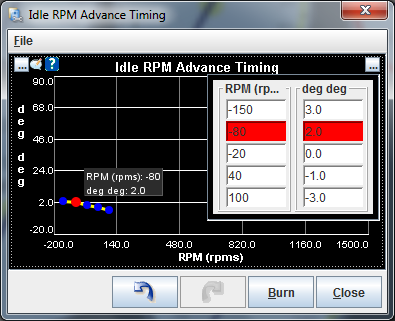 To help the engine idle smoothly an Idle Advance function has been added. This is a fantastic feature and well worth upgrading to the latest codes if you have an older one. When the conditions are met for TPS, RPM, etc, the timing will alter plus or minus the values set in the table. So to reduce the engine RPM (Too high) we would reduce the advance and to increase the RPM (RPM too low) we would increase the advance. This tweeks the advance a little trying to aim for the target RPM set in the Closed Loop Idle Target rpm Curve 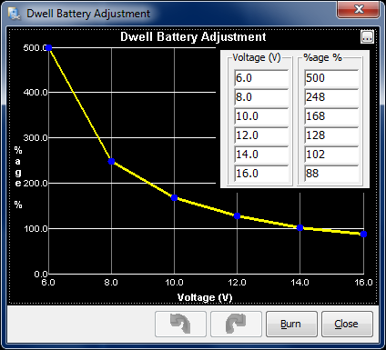 The MS ECU's correct for dwell (Charge time) times using the standard correction table, as above. This should only be altered from the above if you have specific data about your coils!
|
||||||||||||||||||||||||||||||||||||||||||||||||||||||||||||||||||||||||||||||||||||||||||||||||||||||||||||||||||||||||||||||||||||||||||||||||||||||||||||